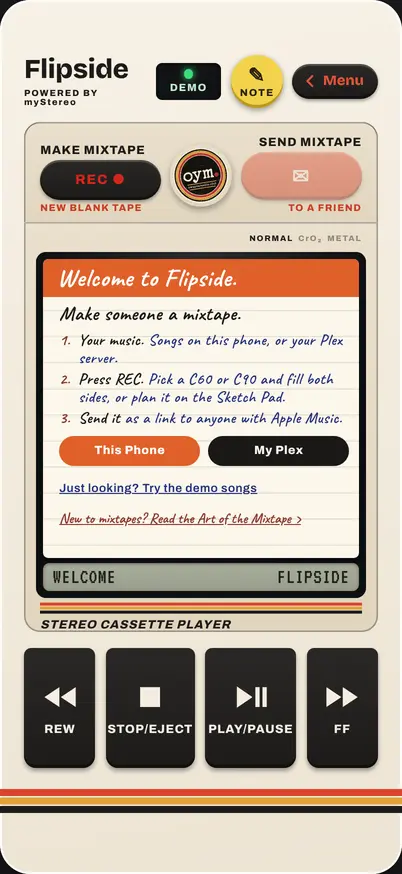
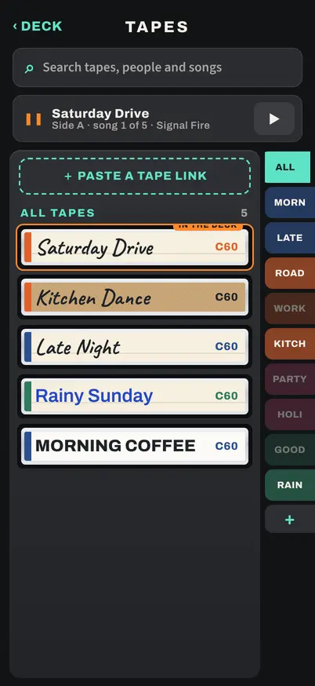
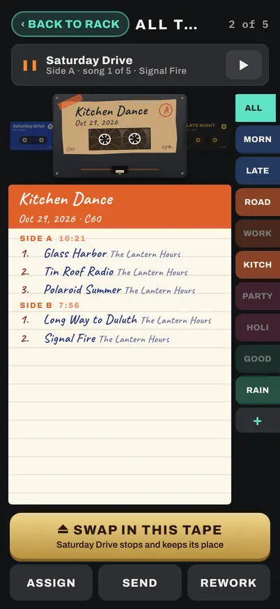
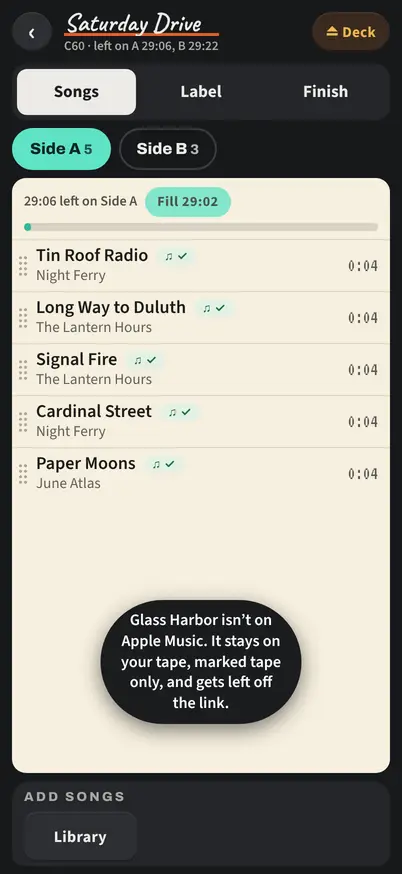
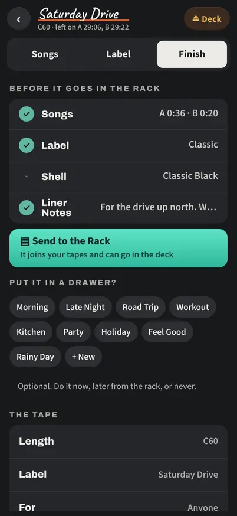
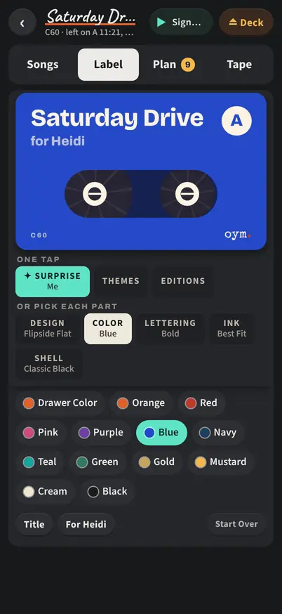
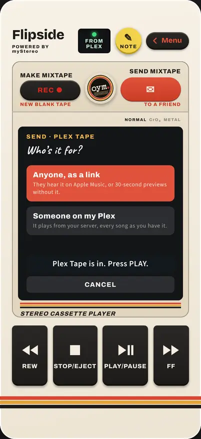
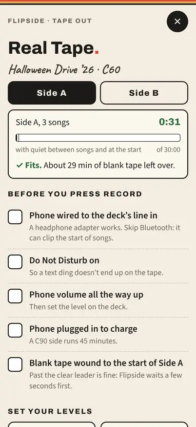

User’s Guide · Flipside 1.9 · Powered by myStereo
Flipside.
Make someone a mixtape.
A mixtape is a few songs picked for one person, in an order that means something. Flipside gives you a C60 or a C90, two sides, a label you write yourself and a cassette deck with real keys. It plays music you own: songs on your phone, or your own Plex server.
Ninety minutes makes you choose. That’s the whole point.
Contents
Chapter 1
Getting Started
Flipside is a web app. There’s nothing to download from an app store. Put it on your Home Screen and it opens full screen with its own cassette icon.
iPhone
Open flipside.ownyourmedia.club in Safari. Tap Share, then Add to Home Screen, then Add.
Android
Open it in Chrome. Tap ⋮, then Add to Home screen or Install app. Your phone’s Back button works like the MENU key.
Where’s your music?
The first time you open Flipside, a card on the deck asks.
- This Phone
- The Files app opens. Pick songs you’ve ripped or bought (tap Select to choose several). They’re saved inside Flipside and play with no signal. You land back on the deck, ready to press REC.
- My Plex
- Sign in to Plex and your whole library is on the bench. Tapes save to Plex too, so they follow you to every device and show up in myStereo.
- Just looking?
- Try the demo songs. Turn them off later in Settings › Your Music › Demo Library.
You can do both. Add songs any time in Settings › Your Music › Add Songs from Files, and sign in to Plex from the same place.

Use the Home Screen app for your real tapes. A private Safari tab forgets everything when you close it.
Chapter 2
The Cassette Deck
Flipside opens on the deck. The window shows the tape that’s loaded, and the readout underneath shows the counter, the side and the song that’s playing.

- PLAY/PAUSE
- Plays the tape, or pauses it. The reels turn while it plays.
- REW and FF
- Tap to jump back or ahead 15 seconds. Hold to keep winding, right across songs, with the sound of the tape. A tape plays in order; there’s no skipping to a song.
- STOP/EJECT
- Stops the tape. Press it again to open your tape rack (Chapter 3).
- FLIP
- Turns the tape over. At the end of Side A the tape stops and FLIP glows until you turn it. Want Side B to start on its own? Settings › Playing › Auto Reverse.
- RESTART
- Back to the start of the side you’re on.
- SONGS
- The song list, written on the J-card, with the liner notes at the top. Tap a song to write a note about why it’s there.
- TAPE RACK
- Opens the rack while the tape keeps playing.
- REC
- Starts a new tape on the bench (Chapter 4).
- SEND
- Sends the tape in the deck (Chapter 7).
- ✎ NOTE
- For alpha testers: jot down anything that breaks, an idea, or something you love. SEND NOW sends it straight to BC.
- Menu
- Turns the player over to the menu side (Chapter 11).
The light
Next to the Flipside name. It says where the song is coming from.
- ON PHONE A song you added, or a copy saved on this phone. No data used.
- FROM PLEX Streaming from your Plex server.
- APPLE MUSIC A tape someone sent you, playing from Apple Music.
- NO SIGNAL You’re offline and this tape isn’t saved on this phone yet.
- DEMO The demo songs.
A note on a song
When the song playing has a Why It’s Here note, the readout shows ✎ NOTE. Tap it and the note opens on a card. CLOSE goes back to the deck.
Turn it sideways
Turn your phone on its side on the deck and Flipside goes into TV Mode, made for Screen Mirroring to a TV: the tape turning, the song and its note, a Graphic EQ along the bottom. Tap the screen for the keys. Turn it upright and you’re back on the deck; nothing stops playing.
Tapes remember where you stopped. Load one again and it picks up on the same side, in the same song.
Chapter 3
The Tape Rack
Press STOP/EJECT and the rack fills the screen. Every tape stands on its spine, newest first, with the one in the deck on top.


- Lift a tape
- Tap it to see its label, liner notes and songs. Swipe sideways for the next tape.
- LOAD TAPE
- Puts it in the deck. If another tape is playing, the button says SWAP IN THIS TAPE; the playing tape stops and keeps its place.
- SEND
- Sends it (Chapter 7).
- ASSIGN
- Files it in drawers. A tape can sit in as many as you like.
- REWORK
- Takes it back to the bench to change, drawers and notes and all.
- TAPE OUT
- Records it onto a real cassette (Chapter 9).
Your first tape shows LOAD TAPE, SEND and ⋯ MORE; MORE has the rest.
Drawers
The tabs down the side. ALL shows every tape once. A drawer gets a tab once something’s in it: Morning, Road Trip, Late Night or one you make with +. NO DRAWER shows the tapes you haven’t filed. Press and hold a tab to rename it or take it out.
From friends
A tape someone sent you has a pink ♫ mark with their name on its spine. The FROM FRIENDS tab shows just those.
Search, erase and paste
The search bar finds tapes by name, who they’re for, or a song on them. Swipe a tape left and tap ERASE, then SURE? to erase it; a backup is saved first. ＋ PASTE A TAPE LINK at the top adds a tape from a link you’ve copied (Chapter 8).
Chapter 4
Making a Tape
Tapes are made on the bench. Press REC on the deck, or BENCH on the menu side.
- Write the label: the tape’s name.
- Pick a C60 (30 minutes a side) or a C90 (45). When a side is full, it’s full.
- The library opens. Tap a song for + Side A or + Side B. Each side shows the time left, and a song too long for the room left is crossed out. Press Done Adding to see the tape.
- To change the order, press and hold a song until it lifts, then drag it. Tap a song for its buttons: the other side, Play, + Why, or take it off.
- When it’s ready, open the Finish tab and press Send to the Rack. The deck turns over and your tape is waiting in the rack.


Every tape fits a real cassette
Side times count four seconds of quiet between songs, so a Flipside C90 fits a real C90. A side that’s too long shows in red, and the tape can’t go in the rack until you move a song.
Fill
A side with a minute or more left shows a Fill button. It offers songs that fit the time: from your crate first, then by artists already on the tape, then from your library.
After your first tape
Your first tape keeps the bench simple: Songs, Label, Finish. From your second tape on, a few more things appear, with a note the first time:
- The Crate
- A maybe pile beside Side A and Side B, with no time limit. Choose later.
- Plan
- The Coach, for a tape with a story (Chapter 6).
- Don’t Own and Wishlist
- Room for songs you don’t have yet (Chapter 10).
- Tape
- The Finish tab becomes Tape: length, label, who it’s for, drawers, Apple Music Copy, sync, and Erase This Tape.
Sideways
Turn your phone on its side and the bench spreads out: the library, the crate and the tape side by side. Drag songs between columns. Swipe left or right across the columns to give one more room.
Chapter 5
The Label and Liner Notes
The Label tab shows the tape itself. Change it as much or as little as you like.

- One tap
- ✦ Surprise Me, or Themes: eighteen looks named for kinds of music, from Rock and Jazz to Chiptune. Editions match the special edition decks.
- Or pick each part
- Design (Classic, Factory, Handmade, Metal or Flipside Flat), Paper, Pen, Ink and Shell. Ink always stays readable on the paper you pick.
- Flipside Flat
- One solid color with big lettering. Its tabs are Color (your drawer’s color, or one of twelve), Lettering (Bold, Marker, Block Caps, Typewriter, Digital) and Ink (Best Fit picks cream or black so it reads).
- Title and Who’s It For?
- Titles hold up to 30 letters, “for” up to 24.
- Liner Notes
- A few lines about the whole tape: who it’s for, what it’s about, when to play it. They show on the tape’s song list in the rack, at the top of SONGS on the deck, and they go with the tape when you send it.
- Start Over
- Back to a plain label.
Two kinds of notes, then: liner notes for the whole tape, and Why It’s Here for one song. Use either, both or neither.
Chapter 6
Planning with the Coach
A great mixtape is often planned before it’s made. Press REC, write the label, and choose Not sure what goes on it? Plan it with the Coach.
- Pick a story arc: the Classic Arc, Road Trip, For a Crush, Party, Heartbreak, or Bright Side, Late Side. Or build your own, or skip it.
- Fill the crate with maybes, in any order, with no time limit.
- Tap a keeper for → Running Order and pick the beat where it belongs. Hold and drag to rearrange.
- The Plan tab shows the story, each beat, how the order fits a C60 or C90, and the Coach’s notes.
- When it fits and tells the story, press ● Make It and choose C60 or C90. Side A fills first, and Side B picks up where it ends.
- Hold a Spot
- Know you need “something slow, about four minutes” but not which song? Hold the spot. It counts toward the time until the real song goes in.
- The Mixtape Coach
- Gentle notes on the rules of thumb: an artist twice in a row, a long opener, the song right before the flip. Press Got It to dismiss one. Turn the Coach off in Settings › Making Tapes.
- The Art of the Mixtape
- Ten rules of thumb for the craft, on the menu side.
Chapter 7
Sending a Tape
Press SEND on the deck, or lift the tape in the rack and press SEND. If you use Plex, Flipside asks who it’s for.

Anyone, as a link
- Flipside matches each song to Apple Music. ✓ means it found the same song. ? means Apple’s version runs a different length, maybe live or remastered: KEEP sends Apple’s, OFF leaves that song off the link.
- Press GET THE LINK, then SHARE THE LINK. Pick Messages, Mail, anything.
A song Apple Music doesn’t have stays on your tape, marked tape only, and is left off the link. Your tape doesn’t change.
In Messages the link shows an Own Your Media tape with your name and the title. The songs ride inside the link itself, so no server ever sees them. A friend with Apple Music hears every song in full; without it, 30 seconds of each.
Someone on my Plex
Pick a person you share your Plex server with. They hear the tape from your library, every song as you have it. Song List decides whether they see the songs up front or hear them as a surprise.
Using only songs on your phone? SEND goes straight to the link.
Chapter 8
When Someone Sends You One
Tap the link. Flipside opens with the tape in the deck, Side A cued.
- Sign in to Apple Music
- Every song plays in full. No Apple Music? Press PLAY anyway and hear 30 seconds of each.
- One song at a time
- Only the song that’s playing is written on the tape. Hear both sides to the end and the whole list is yours, with SAVE TO APPLE MUSIC. The liner notes are there from the start.
- Opened in Safari instead of the app?
- On an iPhone, links always open Safari. Tap COPY THIS TAPE, open Flipside from your Home Screen, and tap ＋ PASTE A TAPE LINK in the rack.
- In the rack
- It has a ♫ mark with the sender’s name, and lives under FROM FRIENDS.
Chapter 9
Real Tape
Record a Flipside tape onto a real cassette. You need a deck or recorder with a line in (or aux in) and a cable from your phone.

- Lift the tape in the rack and press TAPE OUT.
- Check the list: cable in, Do Not Disturb on, volume all the way up, phone charging, blank tape at the start of Side A.
- Set your levels with the tone, or with the loudest ten seconds of the side.
- Press record on your deck, then start the countdown. Flipside waits for the leader tape, then plays the side with four seconds of quiet between songs, so your deck can find each break.
- When it tells you, stop the deck, flip the tape, and do Side B.
A tape you’ve recorded says so on its card in the rack.
Keep the screen on and the phone plugged in. Bluetooth can clip the start of a song, so use a cable.
Chapter 10
Songs You Don’t Own Yet
The perfect song isn’t always in your library. Save its place anyway. (This shows up on the bench from your second tape.)
- On the bench, under Add Songs, press ♡ Don’t Own.
- Search for the song and put it on a side or in the crate. It holds its spot and its time.
- Tap it for links to buy it: Bandcamp, Qobuz, the iTunes Store and 7digital.
- Add the file to your music. Flipside fills it in on the tape by itself.
In the Don’t Own search, ♡ Song or ♡ Album puts it on your Wishlist, along with every ♡ song already on a tape. The Wishlist is in the Menu, too. The deck plays right past songs you don’t have yet.
Chapter 12
On a Computer
Open Flipside in a browser on your computer. A wide window shows the deck and the library side by side. Turn it on or off in Settings › Look › Desktop Mode.
The bench spreads out with the library, crate and tape side by side: drag songs with the mouse. In the rack, scroll or use the arrow keys, and press Enter to load the middle tape. The space bar plays and pauses.
Chapter 13
Troubleshooting
- The first PLAY does nothing
- Phones only start sound after a tap. Press PLAY once more, and check the volume and the ring switch.
- A song won’t add from Files
- If it’s in iCloud Drive, open it once in Files so it downloads, then add it again. Flipside says why when it can’t save one.
- Everything’s gone
- Were you in a private Safari tab, or did you remove the Home Screen app? Both erase what’s on the phone. Plex tapes come back when you sign in. For the rest: Settings › Your Music › Open a Backup.
- A tape is missing
- Flipside keeps copies on the phone: Alpha › Logs & Backups › Restore Sketches & Tapes. Pick a copy from before it went missing. Nothing you have now changes.
- Can’t reach Plex
- Make sure your server is on and Remote Access is turned on in Plex, then Settings › Your Music › Plex › Reconnect.
- A tape is missing on another device
- Both need to be on the same Plex server. Open the bench on each and Sync with Plex.
- My friend can’t play my tape
- For a link, they need nothing but the link; without Apple Music they hear previews. For Plex, share your library with them in Plex first.
- Music stops with the screen locked
- Close myStereo if it’s open, so the lock screen only has Flipside. If it still stops, copy the Playback Log (Alpha › Logs & Backups) and send it to BC.
- NO SIGNAL on a tape
- It isn’t saved on this phone. With a signal, play it once with Analog Mode on, or use Dub All My Tapes.
- The icon looks old
- Make a backup file first. Then remove Flipside from your Home Screen, add it again from Safari, and open the backup.
- Android: Back closes Flipside
- Back steps out of menus first; on the deck with nothing open, it leaves the app.
Still stuck? Press ✎ NOTE and tell BC, or write to bc@runawayanchor.com and say which phone you use.
Make someone a mixtape. Powered by myStereo. Built by BC Gordon in the Twin Cities. An Own Your Media Club project · ownyourmedia.club